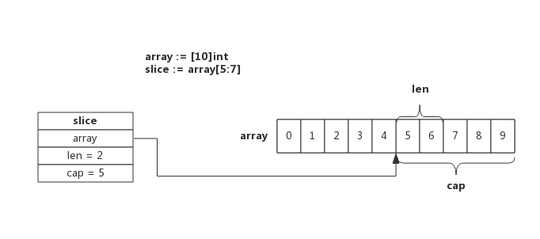

前言
Slice又称动态数组，依托数组实现，可以方便的进行扩容、传递等，实际使用中比数组更灵活。
正因为灵活，如果不了解其内部实现机制，有可能遭遇莫名的异常现象。Slice的实现原理很简单，本节试图根据真实的使用场景，在源码中总结实现原理。
热身环节
按照惯例，我们开始前先看几段代码用于检测对Slice的理解程度。
题目一
下面程序输出什么？
1 | package main |
程序解释： main函数中定义了一个10个长度的整型数组array，然后定义了一个切片slice，切取数组的第6个元素，最后打印slice的长度和容量，判断切片的第一个元素和数组的第6个元素地址是否相等。
参考答案： slice跟据数组array创建，与数组共享存储空间，slice起始位置是array[5]，长度为1，容量为5，slice[0]和array[5]地址相同。
题目二
下面程序输出什么？
1 | package main |
程序解释： 函数AddElement()接受一个切片和一个元素，把元素append进切片中，并返回切片。main()函数中定义一个切片，并向切片中append 3个元素，接着调用AddElement()继续向切片append进第4个元素同时定义一个新的切片newSlice。最后判断新切片newSlice与旧切片slice是否共用一块存储空间。
参考答案： append函数执行时会判断切片容量是否能够存放新增元素，如果不能，则会重新申请存储空间，新存储空间将是原来的2倍或1.25倍（取决于扩展原空间大小），本例中实际执行了两次append操作，第一次空间增长到4，所以第二次append不会再扩容，所以新旧两个切片将共用一块存储空间。程序会输出"true"。
题目三
下面程序由Golang源码改编而来，程序输出什么？
1 | package main |
程序解释： 该段程序源自select的实现代码，程序中定义一个长度为10的切片order，pollorder和lockorder分别是对order切片做了order[low:high:max]操作生成的切片，最后程序分别打印pollorder和lockorder的容量和长度。
参考答案： order[low:high:max]操作意思是对order进行切片，新切片范围是[low, high),新切片容量是max。order长度为2倍的orderLen，pollorder切片指的是order的前半部分切片，lockorder指的是order的后半部分切片，即原order分成了两段。所以，pollorder和lockerorder的长度和容量都是orderLen，即5。
Slice实现原理
Slice依托数组实现，底层数组对用户屏蔽，在底层数组容量不足时可以实现自动重分配并生成新的Slice。 接下来按照实际使用场景分别介绍其实现机制。
Slice数据结构
源码包中src/runtime/slice.go:slice定义了Slice的数据结构：
1 | type slice struct { |
从数据结构看Slice很清晰, array指针指向底层数组，len表示切片长度，cap表示底层数组容量。
使用make创建Slice
使用make来创建Slice时，可以同时指定长度和容量，创建时底层会分配一个数组，数组的长度即容量。
例如，语句slice := make([]int, 5, 10)所创建的Slice，结构如下图所示：

该Slice长度为5，即可以使用下标slice[0] ~ slice[4]来操作里面的元素，capacity为10，表示后续向slice添加新的元素时可以不必重新分配内存，直接使用预留内存即可。
使用数组创建Slice
使用数组来创建Slice时，Slice将与原数组共用一部分内存。
例如，语句slice := array[5:7]所创建的Slice，结构如下图所示：

切片从数组array[5]开始，到数组array[7]结束（不含array[7]），即切片长度为2，数组后面的内容都作为切片的预留内存，即capacity为5。
数组和切片操作可能作用于同一块内存，这也是使用过程中需要注意的地方。
Slice 扩容
使用append向Slice追加元素时，如果Slice空间不足，将会触发Slice扩容，扩容实际上重新一配一块更大的内存，将原Slice数据拷贝进新Slice，然后返回新Slice，扩容后再将数据追加进去。
例如，当向一个capacity为5，且length也为5的Slice再次追加1个元素时，就会发生扩容，如下图所示：

扩容操作只关心容量，会把原Slice数据拷贝到新Slice，追加数据由append在扩容结束后完成。上图可见，扩容后新的Slice长度仍然是5，但容量由5提升到了10，原Slice的数据也都拷贝到了新Slice指向的数组中。
扩容容量的选择遵循以下规则：
- 如果原Slice容量小于1024，则新Slice容量将扩大为原来的2倍；
- 如果原Slice容量大于等于1024，则新Slice容量将扩大为原来的1.25倍；
使用append()向Slice添加一个元素的实现步骤如下： 1. 假如Slice容量够用，则将新元素追加进去，Slice.len++，返回原Slice 2. 原Slice容量不够，则将Slice先扩容，扩容后得到新Slice 3. 将新元素追加进新Slice，Slice.len++，返回新的Slice。
Slice Copy
使用copy()内置函数拷贝两个切片时，会将源切片的数据逐个拷贝到目的切片指向的数组中，拷贝数量取两个切片长度的最小值。
例如长度为10的切片拷贝到长度为5的切片时，将会拷贝5个元素。
也就是说，copy过程中不会发生扩容。
特殊切片
跟据数组或切片生成新的切片一般使用slice := array[start:end]方式，这种新生成的切片并没有指定切片的容量，实际上新切片的容量是从start开始直至array的结束。
比如下面两个切片，长度和容量都是一致的，使用共同的内存地址：
1 | sliceA := make([]int, 5, 10) |
根据数组或切片生成切片还有另一种写法，即切片同时也指定容量，即slice[start:end:cap], 其中cap即为新切片的容量，当然容量不能超过原切片实际值，如下所示：
1 | sliceA := make([]int, 5, 10) //length = 5; capacity = 10 |
这切片方法不常见，在Golang源码里能够见到，不过非常利于切片的理解。
编程Tips
- 创建切片时可跟据实际需要预分配容量，尽量避免追加过程中扩容操作，有利于提升性能；
- 切片拷贝时需要判断实际拷贝的元素个数
- 谨慎使用多个切片操作同一个数组，以防读写冲突
Slice总结
- 每个切片都指向一个底层数组
- 每个切片都保存了当前切片的长度、底层数组可用容量
- 使用len()计算切片长度时间复杂度为O(1)，不需要遍历切片
- 使用cap()计算切片容量时间复杂度为O(1)，不需要遍历切片
- 通过函数传递切片时，不会拷贝整个切片，因为切片本身只是个结构体而矣
- 使用append()向切片追加元素时有可能触发扩容，扩容后将会生成新的切片
 支付宝打赏
支付宝打赏
 微信打赏
微信打赏
赞赏一下